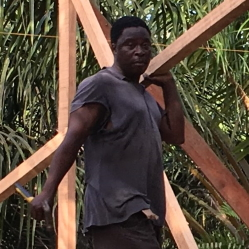
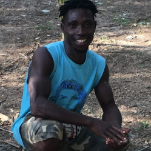
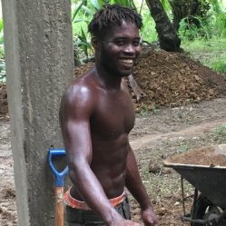
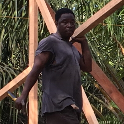
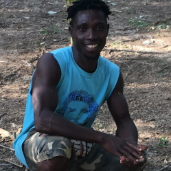

Einigkeit macht stark!
Unser Team aus verschiedenen Kulturen
OPC Schweiz
Vorstand

Dr. Christian Andres, Präsident

Sandra Heiniger, Kassier

Benjamin Andres, Vize-Präsident
OPC Ghana
Geschäftsführung

Dr. Christian Andres, Geschäftsführer 1

Israel Tay Nii Ashitey, Geschäftsführer 2

Moses Awiagah, Sekretär
Manager

Ishmael Ofori Tetteh, Leitender Landwirt

Enoch Cudoje, Leitender Landwirt

Thomas Cudoje, Gebäude
Arbeiter

Emmanuel Yankee (Ghanaer)

Duku Halifax (Ghanaer)

Sibiri Son (Burkinabé)

Clement Baidoo (Ghanaer)
Aktuelle Praktikanten

Joel Denzler, Agroforst, 2019

Sebastian Gauly, Permakultur, 2019

Paul Bauer, Pilzzucht, 2019
Frühere Praktikanten

Christoph Rothenb., Tanztheater, 2019

Noah Silvani, Gebäude, 2019

Pablo Bovy, Permakultur, 2018

Noora Peltola, Naturheilkunde, 2019

Delphine Piccot, Permakultur, 2018

Joana Keller, Machbarkeit, 2018
Aktuelle Studenten
Joana Keller, soziale Indikat., 2019
Dr. Christian Andres, Präsident
Sandra Heiniger, Kassier
Benjamin Andres, Vize-Präsident
Dr. Christian Andres, Geschäftsführer 1
Israel Tay Nii Ashitey, Geschäftsführer 2
Moses Awiagah, Sekretär
Ishmael Ofori Tetteh, Leitender Landwirt
Enoch Cudoje, Leitender Landwirt

Thomas Cudoje, Gebäude

Emmanuel Yankee (Ghanaer)
Duku Halifax (Ghanaer)
Sibiri Son (Burkinabé)
Clement Baidoo (Ghanaer)
Joel Denzler, Agroforst, 2019
Sebastian Gauly, Permakultur, 2019
Paul Bauer, Pilzzucht, 2019
Christoph Rothenb., Tanztheater, 2019
Noah Silvani, Gebäude, 2019
Pablo Bovy, Permakultur, 2018
Noora Peltola, Naturheilkunde, 2019
Delphine Piccot, Permakultur, 2018
Joana Keller, Machbarkeit, 2018
Joana Keller, soziale Indikat., 2019